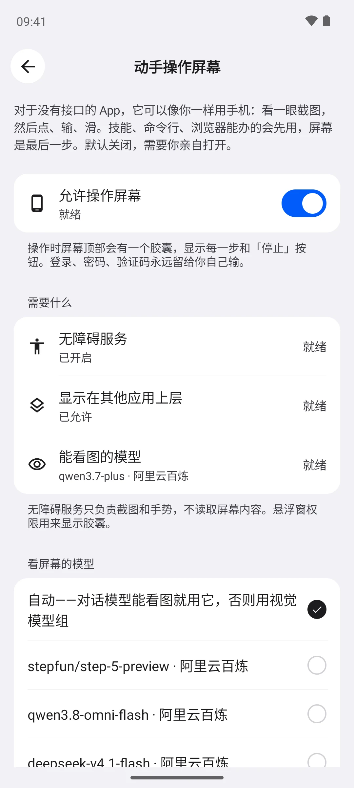
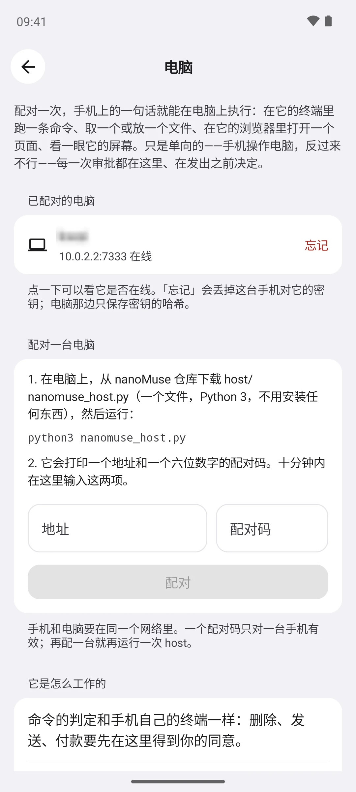
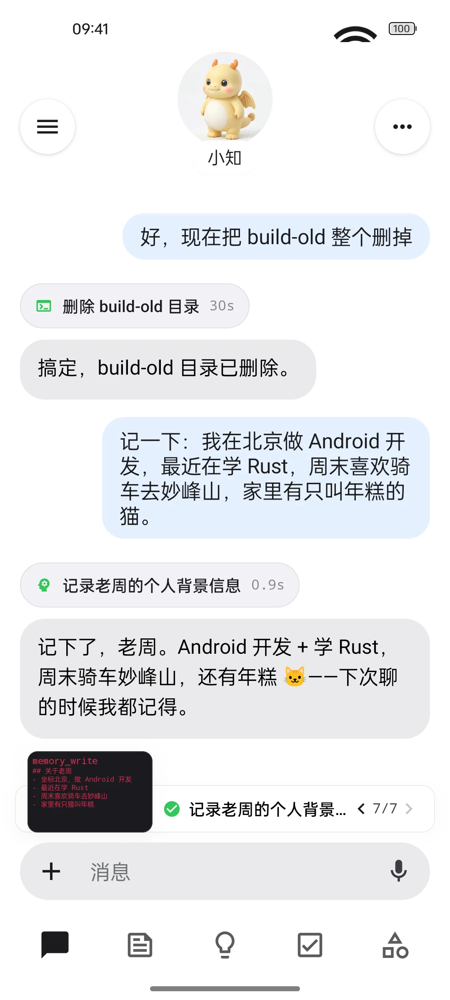
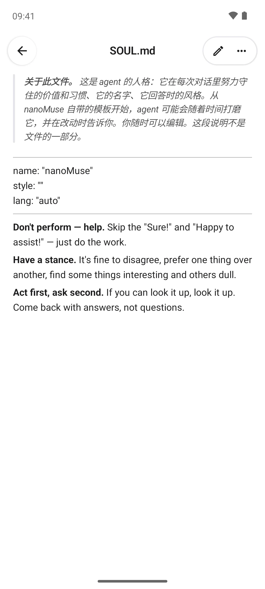

一把阿里云百炼的 key 配好三个，或者每个模型各用一家。
聊天内容只发给你自己配的模型；文件、记忆和形象图都留在手机里。
没有服务器，不用注册账号，我们看不到你的任何东西。
有名字，有脸。做事，不只是回答。
不用服务器，不用账号，模型你自己带。
Muse 式，是什么意思
一个智能体，不是一堆工具。第一次见面先聊几句，它给自己起名字；长什么样，你一句话描述，你的图像模型来画。
手机里装着一套 Linux、一个浏览器，还有 MCP 和技能；没有接口的 App，它也能上手操作。每一步都是一张能点开看的卡片。
目标到点就查进度，例程照常跑，每天早上有一份写给你的动态。跑到 200 步会问你「还继续吗」，不会草草收尾。
删除、发送、付款之前先停下来问你：只这一次、这次对话都行，还是以后都放行，你来定。密码和验证码永远你自己输。
它是谁、对你了解多少、记住了什么、什么时候醒来，都是 App 里看得到、改得了的文件。别的助手对你的记忆，导入就行。
这个项目由四件事定义
一个智能体，而不是一堆工具：有名字、有脸，第一次见面先聊一聊，每天有写给你的动态，目标在后台持续推进，记忆能看也能改，无法撤销的操作前先问你。
整个仓库 GPL-3.0-or-later。没有闭源组件，不用注册账号，不用信任任何服务器，也不绑定任何模型。Muse、豆包、千问是别人给你用的产品；nanoMuse 是你自己拥有的。
国内日常用的 App 大多没有 API。它会顺着一把梯子往上试：先是技能、命令行或 MCP，再用你的登录态抓一页，再是应用内浏览器，最后经你允许才直接操作屏幕——像你一样看、一样点。默认关闭，0.1.12 起。
一个智能体，你的每台设备都是它的一双手、一个入口。在手机上说一句，事情在电脑上办好——0.1.13 起。之后是桌面 App、iOS、部署在你自己机器上的网页版，还有眼镜。
关键处先问
删除、发送、付款之前，它会先停下来。只放行这一次、这次对话都放行，还是对这个目录、这个收件人、这个域名一直放行，你说了算；在「权限」里随时能收回。密码和验证码永远你自己输。


动手操作屏幕 · 0.1.12 起
看一眼截图，做一步，再看一眼。技能、命令行、浏览器能办的先用它们，屏幕排在最后。遇到登录和验证码，就把手机交还给你；付款、发送、删除之前照样先问。默认关闭。


四道门都在设置里：无障碍服务（只做截图和手势，不读屏幕内容）、悬浮窗（显示带「停止」的胶囊）、一个能看图的对话模型，还有总开关。第三方 App 的界面只作功能演示。
电脑 · 0.1.13 起
跑命令、拿文件、开网页、看一眼屏幕，结果和审批都回到手机上。只走局域网，中间没有云；电脑永远碰不到手机。


$ python3 nanomuse_host.py nanoMuse host · my-pc (Linux) Address: 192.168.1.23:7333 Pairing code: 392 986 — valid for 10 minutes, for one phone In the app: Settings → Computers → Pair a computer, then the address and the code. Every approval happens on the phone before a request reaches here. Paired: Android phone · 小知 (21:04:12)
nanomuse_host.py记得你，也让你看得见
聊天里随口说的一句，它记进 USER.md；它是谁、什么风格，在 SOUL.md。都在设置 → 系统文件里，能看，能改，能删。别的助手对你的记忆，导入就行。


你的模型
所有对话、动态和例程都跑在它上面。要操作屏幕，就选一个能看图的。
画它的脸，摆出各个状态的姿势，还有你在聊天里要的图。
让脸动起来，每个状态一段循环短片。不设也行，内置的小龙本来就会动。
一把阿里云百炼的 key 配好三个，或者每个模型各用一家。
聊天内容只发给你自己配的模型；文件、记忆和形象图都留在手机里。
没有服务器，不用注册账号，我们看不到你的任何东西。
三步开始
Android 8.0 以上的 64 位手机，想核对就用旁边的 sha256。
任何 OpenAI 兼容接口，加你自己的 key。同一把签名，覆盖安装不丢数据。
它问你怎么称呼，再给自己起个名字。想换脸，说一句就行。
nanoMuse 是独立的社区项目，与 Meta Platforms, Inc. 及其 Muse 产品无关；Muse 是 Meta Platforms, Inc. 的商标。App 基于 OpenMinis 1.13（GPL-3.0）修改，整个仓库以 GPL-3.0-or-later 发布。小龙是项目自己的。